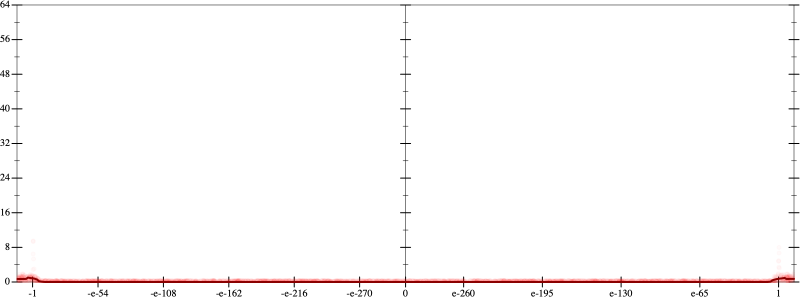
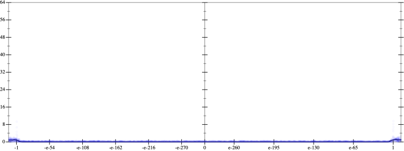
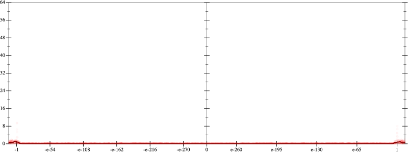
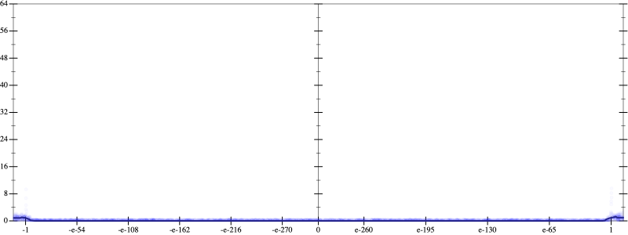

Initial program 0.0
\[\left(\left(\left(\left(-0.246094 + 13.535156 \cdot \left(x \cdot x\right)\right) + -117.304688 \cdot \left(\left(\left(x \cdot x\right) \cdot x\right) \cdot x\right)\right) + 351.914062 \cdot \left(\left(\left(\left(\left(x \cdot x\right) \cdot x\right) \cdot x\right) \cdot x\right) \cdot x\right)\right) + -427.324219 \cdot \left(\left(\left(\left(\left(\left(\left(x \cdot x\right) \cdot x\right) \cdot x\right) \cdot x\right) \cdot x\right) \cdot x\right) \cdot x\right)\right) + 180.425781 \cdot \left(\left(\left(\left(\left(\left(\left(\left(\left(x \cdot x\right) \cdot x\right) \cdot x\right) \cdot x\right) \cdot x\right) \cdot x\right) \cdot x\right) \cdot x\right) \cdot x\right)\]
Taylor expanded around 0 0.0
\[\leadsto \left(\left(\left(\left(-0.246094 + \color{blue}{13.535156 \cdot {x}^{2}}\right) + -117.304688 \cdot \left(\left(\left(x \cdot x\right) \cdot x\right) \cdot x\right)\right) + 351.914062 \cdot \left(\left(\left(\left(\left(x \cdot x\right) \cdot x\right) \cdot x\right) \cdot x\right) \cdot x\right)\right) + -427.324219 \cdot \left(\left(\left(\left(\left(\left(\left(x \cdot x\right) \cdot x\right) \cdot x\right) \cdot x\right) \cdot x\right) \cdot x\right) \cdot x\right)\right) + 180.425781 \cdot \left(\left(\left(\left(\left(\left(\left(\left(\left(x \cdot x\right) \cdot x\right) \cdot x\right) \cdot x\right) \cdot x\right) \cdot x\right) \cdot x\right) \cdot x\right) \cdot x\right)\]
Applied simplify0.1
\[\leadsto \color{blue}{\left(\left(\left(x \cdot x\right) \cdot \left(x \cdot x\right)\right) \cdot \left(\left(x \cdot x\right) \cdot \left(x \cdot x\right)\right)\right) \cdot \left(-427.324219 + x \cdot \left(180.425781 \cdot x\right)\right) + \left(\left(\left(x \cdot x\right) \cdot \left(x \cdot x\right)\right) \cdot \left(-117.304688 + \left(x \cdot x\right) \cdot 351.914062\right) + \left(-0.246094 + x \cdot \left(x \cdot 13.535156\right)\right)\right)}\]
Taylor expanded around 0 0.1
\[\leadsto \left(\left(\left(x \cdot x\right) \cdot \left(x \cdot x\right)\right) \cdot \left(\left(x \cdot x\right) \cdot \left(x \cdot x\right)\right)\right) \cdot \left(-427.324219 + x \cdot \left(180.425781 \cdot x\right)\right) + \left(\color{blue}{\left(351.914062 \cdot {x}^{6} - 117.304688 \cdot {x}^{4}\right)} + \left(-0.246094 + x \cdot \left(x \cdot 13.535156\right)\right)\right)\]
Applied simplify0.1
\[\leadsto \color{blue}{\left(\left(x \cdot \left(13.535156 \cdot x\right) + {x}^{6} \cdot 351.914062\right) - \left(117.304688 \cdot {x}^{4} - -0.246094\right)\right) + {\left(x \cdot x\right)}^{\left(3 + 1\right)} \cdot \left(x \cdot \left(180.425781 \cdot x\right) + -427.324219\right)}\]
 
